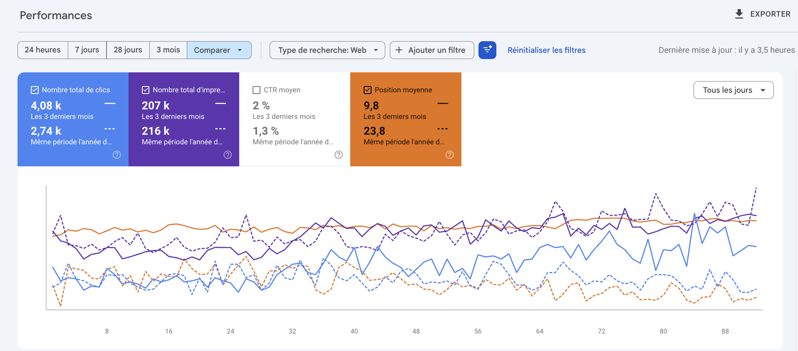
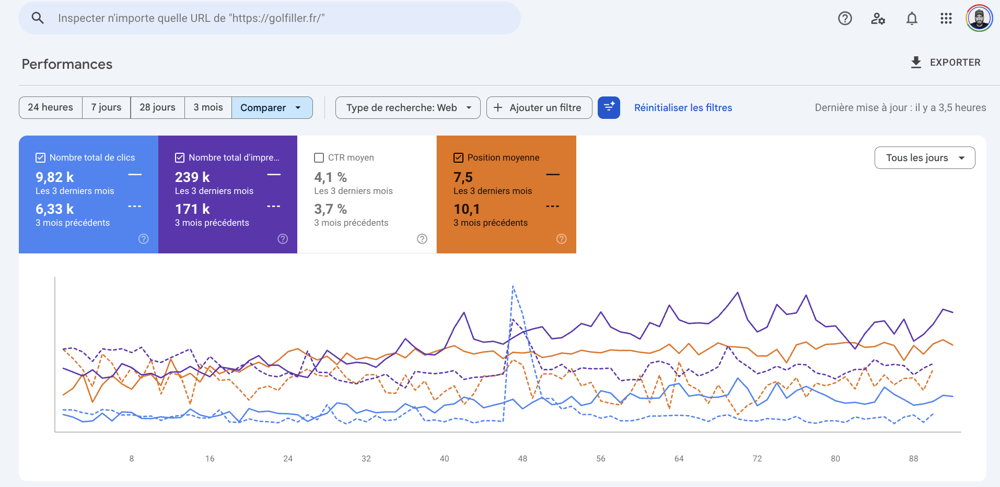

233 pages au sitemap, 122 articles de blog, 8 guides téléchargeables, 4 calculateurs interactifs. Un corpus large sur la catégorie expérience candidat.
Ces guides et calculateurs répondent déjà aux bonnes questions. On les fait remonter sur des mots-clés décisionnels et transactionnels pour en faire un canal de leads.
Le reste en découle.
8 guides déjà en ligne (choisir son ATS, indicateurs marque employeur, gestion de viviers...). On les positionne sur les mots-clés décisionnels et transactionnels de la catégorie.
5 éditions du baromètre Ifop, 8 cas clients documentés. Des pages qu'aucun concurrent ne peut reproduire, et que les IA génératives citent parce que la donnée n'existe qu'à cette source.
Golfiller et Victoria Garden : deux sites accompagnés avec la même méthode. Les résultats Search Console sont sur la page suivante.
Captures Search Console réelles, deux comptes différents de la même méthode.

Trafic hors-marque multiplié par 4,3 en 3 mois, porté par les pages motif (audit du 11 juin 2026).

Nouvelles pages à variable (calculateur, tarifs par parcours) : jusqu'à +377 % de clics en 6 mois.
Un modèle, une variable, des dizaines de pages. On ne produit que les cases vides, et on corrige avant de créer.
Statuts vérifiés au sitemap du 4 août 2026. Les requêtes exactes se figent au cadrage, sans volume affiché.
Trois mois pour poser la machine, trois de plus pour la pousser. Ensuite, elle tourne sans moi.
Connexion à la Search Console, relevé de ce sur quoi le site ressort déjà. On sort de là avec les requêtes décisionnelles tirées de votre data et deux modèles de départ.
Les premières pages des modèles prioritaires partent en ligne (guides métiers, calculateurs repositionnés). En parallèle, on construit l'agent SEO Yaggo sur votre data (baromètre Ifop, cas clients) : c'est lui qui produira et surveillera quand je ne serai plus là.
La production continue, la Search Console mesure l'effet des nouvelles pages, l'existant s'optimise plutôt que d'empiler des pages. À la fin du mois, on décide : autonomie avec l'agent, ou prolongation.
Le reste des modèles se décline, l'existant s'optimise, et on travaille ce qui transforme un lead qualifié en démonstration. C'est là que le trafic déjà acquis se convertit.
Rythme de production : 10 à 15 pages par mois, soit 45 à 50 à trois mois. La méthode ne change pas : requêtes décisionnelles uniquement, data propriétaire comme matière première, liens gagnés jamais achetés.